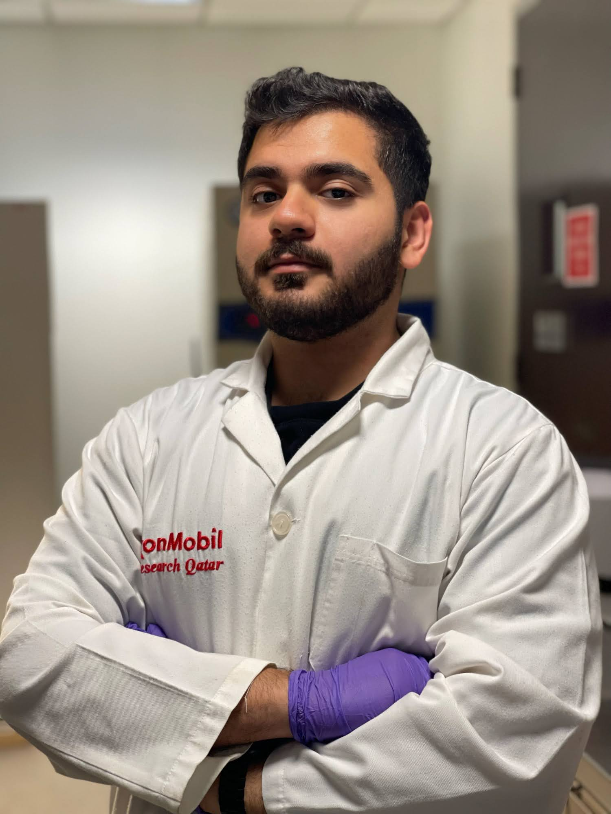
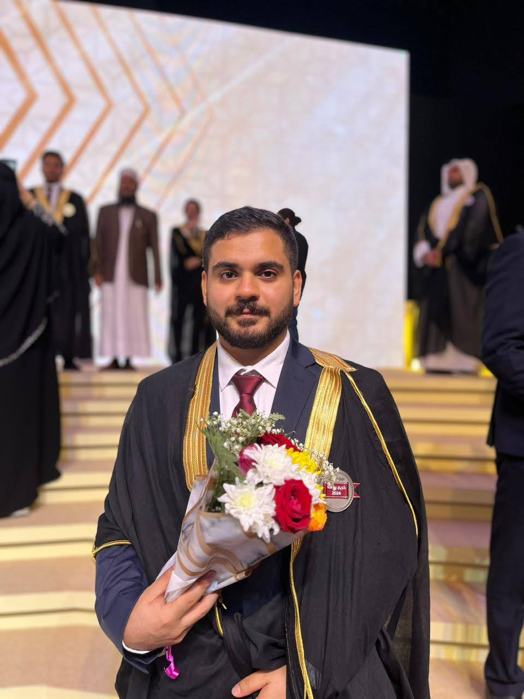

I am an Environmental Scientist working across research, environmental consulting, and ecological fieldwork in the UAE and Qatar. My work focuses on understanding environmental systems through a combination of field data collection, laboratory analysis, and structured data interpretation.
I have contributed to environmental impact assessments (EIA), environmental baseline surveys (EBS), and biodiversity monitoring projects across marine, coastal, and terrestrial ecosystems, translating ecological data into regulatory-ready reports aligned with environmental compliance frameworks.
Alongside consulting, I have conducted marine research on plankton dynamics and ecosystem health in the Arabian Gulf, including the analysis of 200+ biological samples and the development of monitoring frameworks linking marine productivity and biodiversity patterns.
I operate at the intersection of science, data, and decision-making — turning environmental complexity into clear, structured insights for research, policy, and industry.
I combine environmental fieldwork, ecological research, and data analysis to investigate natural systems and support evidence-based decision-making. My work focuses on transforming environmental data into actionable insights for consulting, research, and sustainability contexts.
BSc Environmental Sciences with Marine Sciences
Qatar University
Graduated with High Distinction (GPA: 3.75 / 4.00)
Thesis: Zooplankton distribution and ecosystem dynamics in the Arabian Gulf.
Research Experience:
Undergraduate Research Experience Program (UREP)

I am also the author of "Rise for the Earth", a work that explores environmental awareness through storytelling and accessible science communication.
Through writing, I aim to bridge the gap between scientific knowledge and public understanding — making environmental issues more relatable, human, and impactful beyond academic and technical spaces.